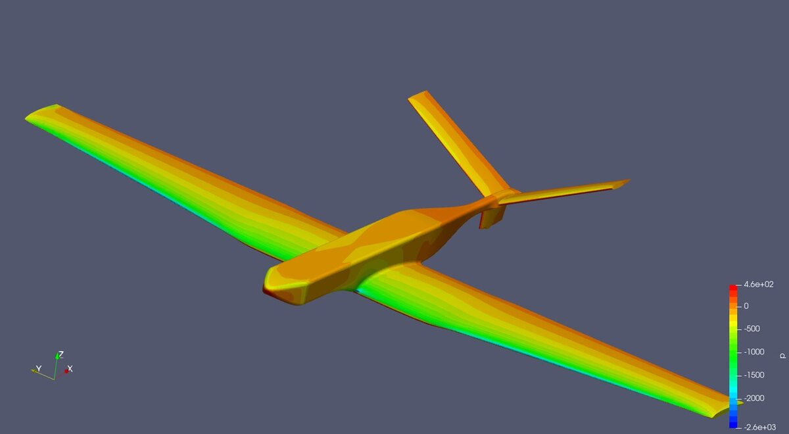

Technical report · October 2026 · 61 pages
Heméra: Aerodynamic Design through CFD
The CFD campaign behind Heméra, Fly-Mi's entry to the Air Cargo Challenge 2026: 42 steady RANS simulations (OpenFOAM, k–ω SST) on half-aircraft domains, run between November 2025 and June 2026. It covers fuselage shape optimisation, wing and high-lift devices, the complete aircraft in cruise, at high incidence and in the take-off run with ground effect, a winglet study and a rotating-propeller feasibility study. A regression-based convergence criterion reduced the oscillation of the cruise solutions from up to 9% to about 0.1%, making differences below one per cent between configurations interpretable.
My role: author; led the campaign, set up the meshing and numerical strategy, and ran the simulations reported.